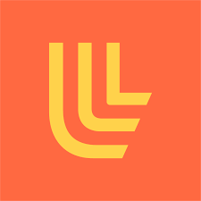
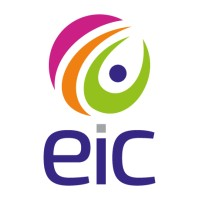

À propos de moi
Je m'appelle Nils Vanderschooten-Akinmoladun, j'ai 20 ans et je suis étudiant en troisième année de BUT Informatique à l'Université de Lille.
Passionné par le développement et les technologies, je suis constamment à la recherche de nouveaux défis pour créer des applications robustes et des interfaces modernes.
Parcours & Formations

BUT Informatique - 3ème Année
Université de Lille, Villeneuve d'Ascq. Diplômé en DUT Informatique.

Cambridge Certificate
Certification d'anglais obtenue en 2023.

Baccalauréat Général
Lycée EIC Tourcoing.
Expériences Professionnelles
Stage Erasmus à Wildau
Réalisation de projets dans le domaine des infrastructures et des télécommunications. Développement d'une application mobile (Aéroport Berlin) en binôme à l'Institut Universitaire de Technologie de Wildau.
Stage HelpDesk - Camaïeu
Assistance aux utilisateurs et résolution de problèmes techniques. Support client et gestion des incidents.
Mini-job en vente - Micromania Leers
Vente, conseil client et gestion des stocks.
Stage de 3ème - Emaho Roubaix
Conception sonore et numérique. Création de contenu numérique et techniques de conception sonore.
Loisirs
Football : US Lesquin
8 saisons, membre depuis juillet 2024. Leadership et cohésion d'équipe.
Jeux vidéo
Passion pour les jeux de stratégie et d'aventure. Collection de jeux et consoles.
Informatique & Multimédia
Projets personnels en développement web et logiciels. Création de contenus multimédias.
Automobile
Passion pour l'histoire et la mécanique automobile.